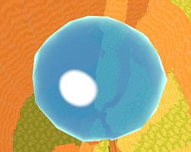

ふわふわぷかぷかゴムテニス
2024

エコーズ・オブ・ザ・ルーツ
2023-2024

動物の惑星：フラットアース [進行中]
2023-現在
プログラマー、デザイナー
以前のジャムプロジェクト「アニマルプラネット」のアップグレード版。Unityで製作された（平らな）惑星ビルディング、戦略、シミュレーションゲーム。新しい災害システムが導入される予定！プロジェクトは積極的に開発中です。

Slimo
2023
プログラマー、デザイナー、3Dアーティスト
プレイヤーがスリンクスを操作し、彼らのプリンセス、スリモを見つける3Dパズルゲーム。Unityを使用してキーボード操作で作成。トロントゲームジャム2023の3日間で制作されたゲームです。

Windo
2022

射手座の日IV
2022
盗作者
アニメ「涼宮ハルヒの憂鬱」のあるエピソードのファンプロジェクト。そのエピソードでは、長門有希が「射手座の日III」というゲームをプログラムしていたため、それを模倣し、図々しくも「IV」と名付けました。

動物の惑星
2021
プログラマー、デザイナー、3Dアーティスト
2021年北京国際ゲームイノベーションカンファレンス(BIGC)で参加賞（トップ13％）を受賞。球形の惑星ビルディング、戦略、シミュレーションゲームで、プレイヤーはさまざまな地形ブロックの組み合わせを発見し、全種類の動物の数量を保つことで生態系のバランスをとる必要があります。

バンプイットアップ
2021
プログラマー、デザイナー
このゲームはプレイヤーがインポートするオーディオファイルを分析し、プレイヤーが遊ぶためのビートマップを生成します。文字通りに盛り上がることが目標で、強いビートがより多くの勢いを提供します！トロントゲームジャム2023で制作されたゲームです。